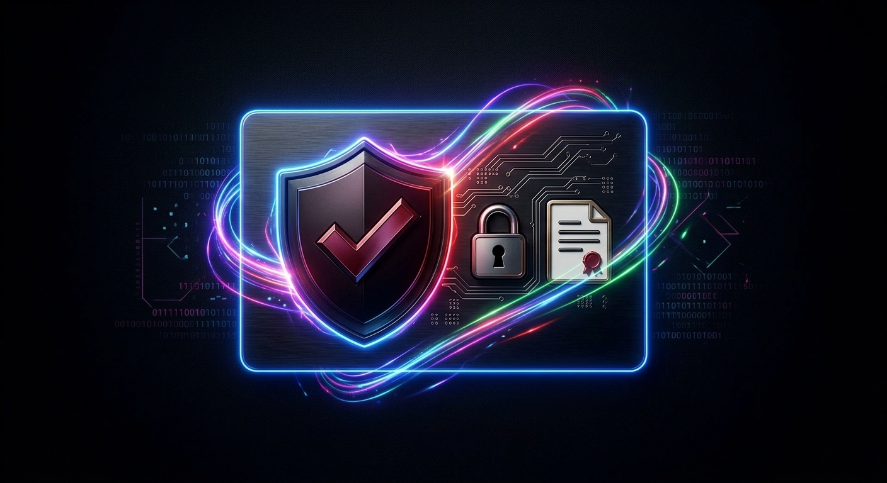

Leder du efter et casino uden ROFUS? Så er du sandsynligvis stødt på udenlandske spiludbydere, der ikke er tilsluttet det danske selvudelukkelsesregister. Denne guide gennemgår, hvad det betyder, hvordan det adskiller sig fra danske spiludbydere med licens fra Spillemyndigheden, og hvornår du bør tænke dig ekstra godt om.
Hvad er ROFUS?
ROFUS – Register Over Frivilligt Udelukkede Spillere – er Spillemyndighedens register, hvor man frivilligt kan udelukke sig selv fra alle danske spiludbydere med dansk licens, enten i en periode eller permanent. Formålet er at give spillere med et problematisk forhold til spil et effektivt værktøj til at sætte spillet på pause.
Casinoer "uden ROFUS" er udenlandske platforme, der opererer under andre landes licenser – for eksempel Malta Gaming Authority, Curaçao eGaming eller UK Gambling Commission – og derfor ikke er forpligtet til at tjekke det danske register.
Dansk licens eller udenlandsk – hvad er forskellen?
| Område | Dansk licens | Udenlandsk licens |
|---|---|---|
| Bonusloft | Maks. 1.000 kr. | Ofte betydeligt højere, varierer meget |
| Identifikation | NemID/MitID påkrævet | Alternative KYC-løsninger |
| ROFUS-tjek | Obligatorisk | Ikke påkrævet |
| Klageinstans | Spillemyndigheden | Afhænger af licensland |
| Beskatning | Skattefri | Skattefri ved EU/EØS-licens, ellers varierer det |
Forskellen handler primært om regulering og forbrugerbeskyttelse – ikke nødvendigvis om selve spiloplevelsen.

Sådan vurderer du et casino uden ROFUS
- Licens og tilsyn. Se efter en anerkendt licens og tjek, om casinoet er registreret hos en uafhængig testinstans som eCOGRA.
- Vilkår for bonusser. Læs det med småt. Høje bonusser betyder ofte høje omsætningskrav – 35–50x er almindeligt.
- Udbetalingstider. Undersøg, hvor lang tid udbetalinger tager, og om der er loft over beløbet pr. gang.
- Kundeservice. Test gerne support på forhånd og se, om svarene er klare og hurtige.
- Ansvarligt spil. Selv uden ROFUS bør et seriøst casino tilbyde egne grænser for indbetaling, tab og spilletid.
Er det lovligt, og skal jeg betale skat?
Ja – det er ikke ulovligt for danske spillere at oprette konto hos udenlandske spiludbydere. Disse casinoer er dog ikke underlagt dansk tilsyn, hvilket betyder færre garantier, hvis noget går galt.
Gevinster fra casinoer med licens i et EU/EØS-land er som udgangspunkt skattefri, ligesom gevinster fra danske udbydere. Har casinoet licens uden for EU/EØS, kan gevinster i visse tilfælde være skattepligtige – tjek altid gældende regler, hvis du er i tvivl.

Hvis du er tilmeldt ROFUS
Er du selv tilmeldt ROFUS, har du eller nogen omkring dig sandsynligvis vurderet, at det var nødvendigt for din trivsel. At søge efter måder at spille udenom denne beslutning kan være et tegn på, at spil fylder mere, end det bør. Selvudelukkelse virker bedst, når den respekteres fuldt ud – også over for udenlandske casinoer.
Mærker du en trang til at spille, selvom du er udelukket, er der hjælp at hente:
- ROFUS / Spillemyndighedenrofus.nu
- StopSpilletGratis, anonym rådgivning
- Center for LudomaniGratis behandling og rådgivning, tlf. 70 11 18 08
Spil skal være underholdning – ikke noget, der styrer din hverdag.
Ofte stillede spørgsmål
Kan jeg stadig sætte mine egne grænser uden ROFUS?
Ja. De fleste seriøse casinoer – danske som udenlandske – giver dig mulighed for selv at indstille daglige eller ugentlige grænser for indbetaling, tab og spilletid direkte i din spillerkonto.
Er udenlandske casinoer mindre sikre end danske?
Ikke nødvendigvis, men de er underlagt andre regler. Vælg altid et casino med en anerkendt licens, og undersøg deres omdømme, før du indbetaler penge.
Hvorfor har danske casinoer lavere bonusser?
Spillemyndigheden indførte i 2020 et loft på 1.000 kr. for velkomstbonusser for at begrænse aggressiv markedsføring rettet mod sårbare spillere.